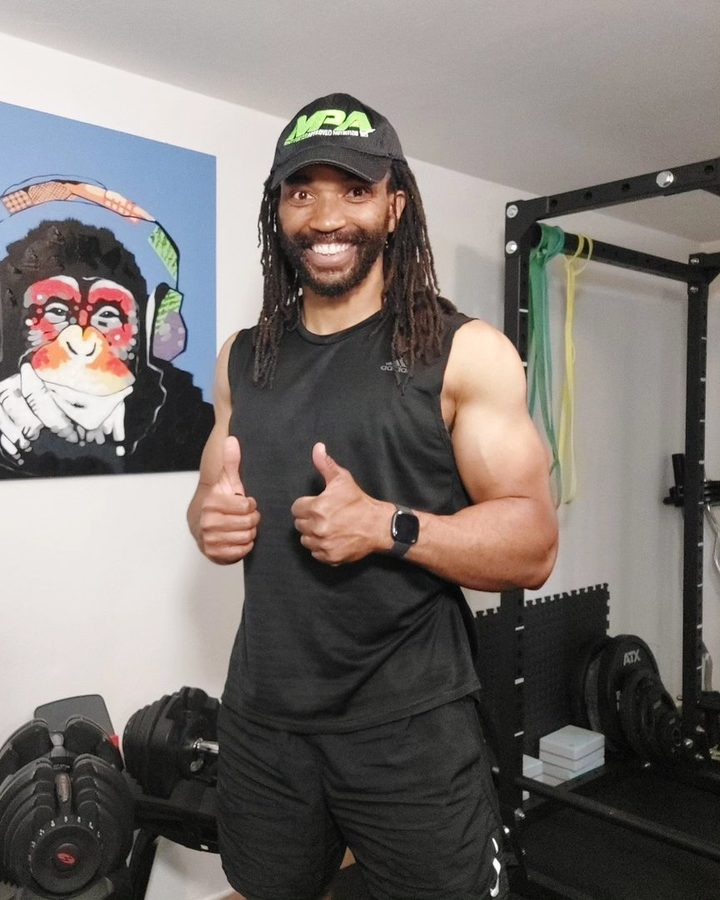

For desk-bound professionals over 35
Come Back Strong in 12 weeks, from home
Get instant access to 8 progressive workouts across four 3-week blocks, 45 video demos you tap to watch, a 6-minute warm-up for desk-tight hips and shoulders, a built-in logbook, a simple rule for when to lift heavier, 2× and 3× weekly schedules, and six recovery and fuel habits that make the training work.
Instant PDF · 40 to 45 min sessions · 30-day money-back guarantee
Read this slowly
If any of this sounds like you
- You sit all day. By the evening your back, hips and neck feel tight.
- You used to be fit. Now the stairs feel harder than they should.
- You start a plan, miss a week, and then stop. Then you start again.
- Getting to the gym takes too long, so most weeks you just don't go.
- You own some dumbbells, but you are not sure what to do with them, so you guess.
- You worry this is just how it is now, and that you are getting old before your time.
On the other side
What changes over 12 weeks
Your body loosens up
A 6-minute warm-up made for stiff hips, tight hamstrings and desk shoulders. You feel the difference before you lift anything.
The stairs get easy again
Strength builds block by block, from Foundation to Forge, so everyday life starts to feel lighter.
You stop starting over
Pick the 2× or 3× weekly schedule that fits your real week. The logbook shows your progress, which makes it easier to keep going.
You train at home
Dumbbells, a bench and a band. 40 to 45 minutes, no commute, no waiting for machines.
You know exactly what to do
Tap any exercise to watch it done. A simple progression rule tells you when to go heavier, so you never have to guess.
You feel like yourself again
Stronger, more confident in your body, and kind to your joints along the way. Getting older stops feeling like a slow slide.
Introducing
Come Back Strong
A 12-week dumbbell program for busy professionals over 35 that gives you a clear, simple plan to get strong at home, in a way your joints will thank you for.
Where this came from
Why I built this program

Hi, I'm MK, and my journey with strength training began when I was a Systems Engineer, spending more than ten years at a desk in IT. Training was how I took my body back from all those hours of sitting.
Through years of my own training, natural bodybuilding, and five years running a studio in Prague, I learned what busy people actually need: fewer exercises done well, a plan that fits a real week, and a clear signal for when to push.
It was during my time coaching professionals in that studio that I realized many people could benefit from this, and that most of them would never have the time to come to a gym three times a week.
This realization sparked my desire to share what I had learned in a format anyone could follow at home.
That is why I created Come Back Strong, to give you the simple, joint-friendly plan I wish every desk-bound professional had from the start. Everything in it comes back to one question: what would this look like if it were simple?
What's inside
Seven parts. One simple plan.
01
8 progressive workouts in 4 blocks
Foundation, Build, Strengthen and Forge. Each 3-week block builds on the last, so you always know where you are and what comes next.
02
45 video demonstrations
Tap any exercise and watch it done properly. Good form from day one, without booking a session.
03
The 6-minute desk-body warm-up
Made for stiff hips, tight hamstrings and rounded shoulders. Worth doing on its own, even on days you don't train.
04
A logbook on every workout page
Record each session as reps @ weight, right on the page. Seeing your numbers climb is the best reason to show up next time.
05
The simple progression rule
One clear rule that tells you when to lift heavier. It takes the guesswork out, which is where most home training stalls.
06
2× and 3× weekly schedules
Choose the one that fits your life right now and switch any time. A busy month doesn't have to end your progress.
07
Recovery and fuel, kept simple
Six habits that make your training work. No macros to count and no meal plans to follow.
YOU'LL NEED
Dumbbells (adjustable, or 3 to 4 pairs), an adjustable bench, and a resistance band with a door anchor. An exercise mat is optional.
See it in action
Coached by me, move by move
These are the kind of demos inside the program. Every exercise has one, so you always know what good form looks like before you pick up a weight.
What clients say
The same coaching, in your pocket
Come Back Strong is built on how I coach people one to one. Here is what two of my coaching clients said.
“What I got was more than just losing weight. I got motivation, a lifestyle mindset, better mobility — and mental support whenever I felt far from my goals. It was a safe space where I could test my limits and make real progress.”
“I got something that is now part of my life rather than a project that will end. Feeling fitter, stronger, lighter and calmer — and it fits around my schedule, even with travel.”
Your move
One price. Twelve weeks. Yours to keep.
Every week you wait is another week of the same stiff back and low energy. Twelve weeks from now you could be stronger, or exactly where you are today. Start this Monday.
$47
ONE-TIME PAYMENT
- 8 workouts across 4 three-week blocks
- 45 tap-to-watch video demos
- Warm-up, logbook and progression rule
- 2× and 3× weekly schedules
- Instant PDF for phone, tablet or computer
30-day money-back guarantee
Follow the plan for 30 days. If it isn't for you, email me and I'll refund you in full. No awkward questions.
Questions worth answering
What people ask before they start
No. The first block, Foundation, is built for coming back. You start with weights you can control, learn the moves with the video demos, and only go heavier when the progression rule says you are ready.
The program is designed to be kind to your joints, and the warm-up targets the stiffness that comes from sitting. If you have a medical condition or injury, check with your doctor before you start.
Dumbbells (adjustable, or 3 to 4 pairs), an adjustable bench, and a resistance band with a door anchor. An exercise mat is optional. No gym needed.
About 40 to 45 minutes per session, plus a 6-minute warm-up, two or three times a week. You choose the 2× or 3× schedule, with at least one rest day between sessions.
A simple progression rule tells you. You log your sets on each workout page, and when you hit the target, you move up. No guessing.
No. Recovery and fuel are kept simple with six habits that support your training. No macros to count and no meal plans.
Then you get your money back. Follow the plan for 30 days, and if it is not for you, email me and I will refund you in full.
You get the PDF straight away as an instant download. It works on your phone, tablet or computer, and every exercise links to its video demo.
That is less than $4 a week for a plan that gets you strong again, and you are covered for 30 days. Is that an easy yes?